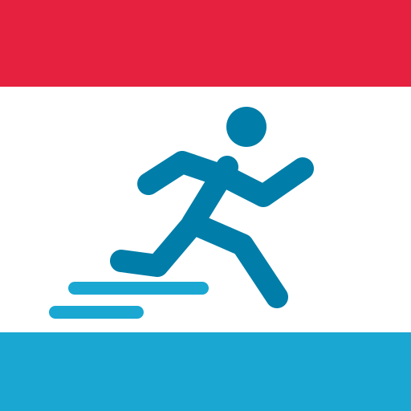

SPRINT MECHANICS ASSESSMENT SCORE
Every stride.
A clearer picture.
Review your sprint footage. Confirm the phases.
Score the 12 S-MAS observations.
Assessment details New assessment
Video review
Confirm the sprint phases
0 of 5Suggestions are starting points. Step through the actual video, then confirm each event.
Inspect the whole interval for pelvic/lumbar posture.
Landmark correction and tracking review
Select a landmark, then tap its position in the video. Changes affect this frame only and clear the scores and event confirmations for this side.
Supporting measurements
Current-frame 2D estimates. These do not award S-MAS points.
Examiner scoring
0 of 12Present = 1 point · Absent = 0 points.
Choose “Unable” when the view does not support a decision.
Assessment summary
S-MAS · 0–12 per sideLocal saves include scores, phase frames, landmarks and small review images. Original videos are not saved by the app. Keep the originals and export results before clearing browser data.
Saved assessments
No assessments loaded.
Recording guide, score definitions and offline use
Record for the published protocol
Two maximal-effort 35 m sprints, after an appropriate warm-up and progressive runs. Film the 25–30 m capture zone at 240 fps from a fixed side-on camera, 7 m away and 0.8 m high. Obtain clear views of the left and right sides, with the full body and ground visible.
Import the camera-original footage. Record the capture rate from the camera setting. The decoded playback cadence can differ from the recording rate in slow-motion files. Timing shown in this app follows the video file; no sprint velocity is calculated from it.
Use examiner judgment
The score follows Bramah et al. (2024). Every phase and item needs review. Rotation, lumbar/pelvic posture and centre-of-mass distance remain visual judgments. A one-point difference can fall within the published measurement error. This preview has not been validated for injury prediction or return-to-sport decisions.
Prepare for offline use
The app and model are stored locally after the first complete online load. Keep this page open while preparation finishes.
Scoring criteria adapted from Bramah et al., 2024 and the authors’ supplementary S-MAS sheet, under CC BY-NC 4.0. Wording is shortened for this interface. The authors do not endorse this app. Prospective evidence · Software credits.